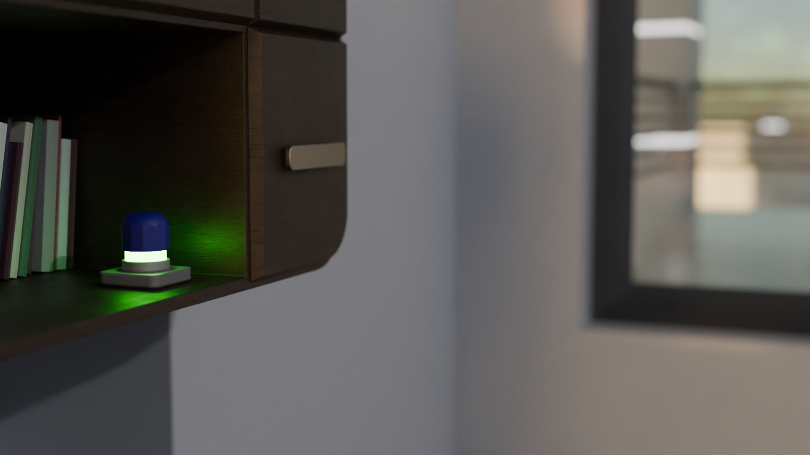
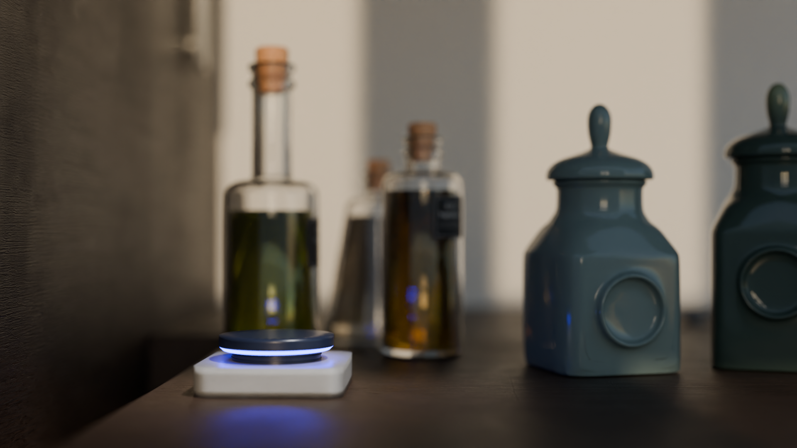

.mute es un conjunto de 5 asistentes virtuales diseñados para crear ambientes de descanso en tu propio hogar. Mediante estímulos a todos los sentidos, y con un sistema de notificaciones ambientales, .mute quiere que recuperes el tiempo de tu vida para hacer lo que tu quieres, apuntando a reducir los efectos de la adicción causadas por los teléfonos móviles y sus sistemas predatorios de notificaciones y uso indiscriminado.
Idea
La idea nace de un problema muy sencillo: Los teléfonos actuales están diseñados para causar adicción. El sistema de notificaciones push se encarga de hacerte llegar actualizaciones, estados, mensajes... en los momentos que sabe que eres más vulnerable, y acabarás usando sus aplicaciones durante horas.
El objetivo es ser capaces de dejar el teléfono en la entrada de tu casa, y no volver a tener que cogerlo hasta que sales por la puerta sin perder la conectividad que tan valiosa y útil es en el mundo actualmente.
Solución
Para ello, hay que conseguir hacer llegar a las personas, todo aquello que quieran saber, por vías alternativas al teléfono móvil, haciéndole consciente de llamadas, mensajes... eliminando el componente adictivo. Tras mucha investigación, doy con un concepto experimental que capta mi atención: Notificaciones ambientales.
Notificaciones ambientales
Las notificaciones ambientales son un sistema de notificación que se integra en los espacios para dar conocimiento mediante vías naturales e integradas, evitando disruptir el flujo natural de tus actividades usando para ellos todos los sentidos humanos. De este modo, el olor puede convertirse en reflejo de la previsión del tiempo, los sonidos en recordatorios de tu rutina o el movimiento en mensajes entrantes.
Los módulos
Cada módulo cumple con una función dentro del ecosistema, y se complementan unos a otros para ofrecer toda la experiencia.
El módulo de fragancia utiliza los olores para despertar receptores y hacerte saber así que, por ejemplo, se esperan lluvias, o que hoy hará frío. El cerebro es capaz de asociar estos olores a diferentes significados, y hacerte conocedor de ello de forma subconsciente.
El módulo de rejilla cuenta con 16 cuentas que se alzan y se bajan para llevar la cuenta de diferentes elementos, como correos recibidos o series de ejercicio.

El módulo de botón se ilumina y activa cuando algo requiere tu atención, como una llamada, a la cual respondes con la simple pulsación de un botón.
El módulo de sonido cuenta con 8 varillas que causan resonancia entre ellas, creando el sonido de forma natural, para avisarte de eventos deportivos o la hora.

Por último, el módulo de tornillo utiliza el movimiento circular para llevar la cuenta de temporizadores, alarmas o medidas.
Así, trabajando de forma interconectada, son capaces de cubrir todas las necesidades de conocimiento dentro del hogar de una forma tranquila y natural, dándote a ti tiempo para hacer todo aquello que muchas veces no nos vemos capaces.
Reflexión
.mute representa un paso más en la evolución de la tecnología. En un punto donde todos luchan por estar más conectado y el dinero se consigue mediante adicciones, .mute quiere cortar de raíz con ese sistema, y crear un ambiente de descanso en tu hogar para tu desarrollo personal y salud mental.